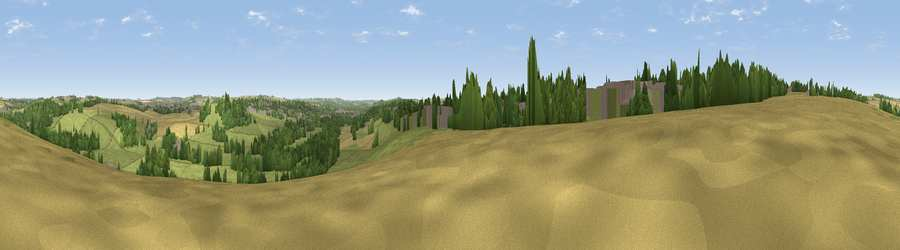

Viewpoint near Stratford-sub-Castle
#26777 in England · top 35% of its area beats it · near Stratford-sub-CastleWhere it is
The exact computed spot (SU 12175 32675). Click the marker for map links.
The view, rendered

A 360° render of this exact spot computed from the terrain model, tree cover and land cover — summer colours, afternoon light, calibrated against photographs of famous viewpoints. Real trees, hedges and buildings will differ in detail.
The panorama
Grey silhouette: terrain skyline in each direction (720 bearings, Earth curvature and refraction included). Dashed green: skyline with trees (+15 m) and buildings (+8 m) as obstacles. Blue strip: how far the ground is visible on each bearing.
Where the view opens
Wedge length = distance to the farthest visible ground on that bearing (vegetation-aware). Rings at 10, 25 and 50 km.
What fills the view
48% grassland · 22% woodland · 19% cropland · 11% built-up
Angular shares of the visible panorama (visual magnitude), not map area. Landscape diversity 0.54 (0–1 Shannon).
Key numbers
More beautiful places nearby
The staircase of upgrades: each row has a higher view potential than everything closer. Driving times are estimates from straight-line distance, calibrated against real road routing — check an actual route before setting out.
| Place | Direction | Drive | Score |
|---|---|---|---|
| Camp Hill | NW · 1 km | ~4 min | 44.5 |
| Viewpoint near Stratford-sub-Castle | E · 2 km | ~4 min | 53.4 |
| Smithen Down | NW · 3 km | ~8 min | 56.3 |
| Viewpoint near Laverstock | ESE · 5 km | ~11 min | 58.0 |
| Cockey Down | E · 5 km | ~12 min | 60.3 |
| Hydon Hill | WSW · 9 km | ~17 min | 61.2 |
| Viewpoint near Bulford | NE · 12 km | ~23 min | 70.3 |
| Monk's Down | WSW · 22 km | ~37 min | 74.4 |
51.09326, -1.82753 · source: screening · position refined by local search. Computed location — check access rights before visiting.